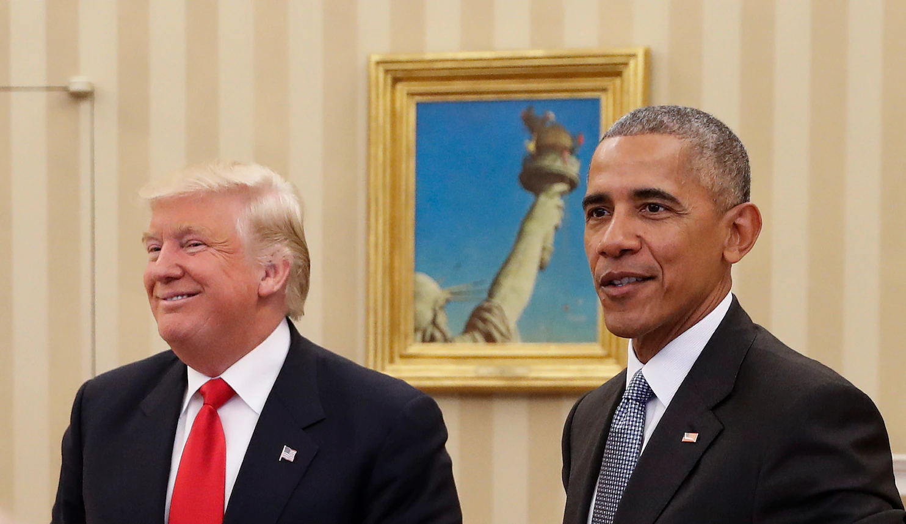
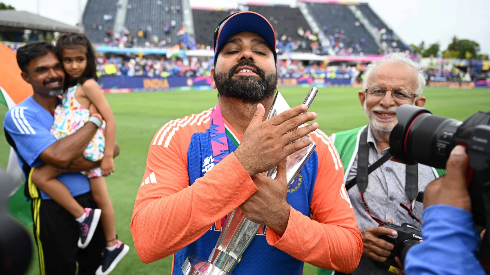

Read President Obama and Donald Trump’s Remarks on Their White House MeetingDonald Trump, the 45th U.S. President and a businessman, has unusual approaches to the practice of handshaking; his handshakes with world leaders since his inauguration as U.S. President have been the subject of extensive commentary. Scholars have noted that politicians' handshakes are usually unnoticed or restricted to silent interpretation by the participants, and only in the case of Trump do they appear to have garnered wide media attention. |
 Allegation of Barack Obama Spying on Donald TrumpAs part of a large and baseless conspiracy theory, Donald Trump posited that Barack Obama had spied on him, which Trump described as "the biggest political crime in American history, by far." The series of accusations have been nicknamed Obamagate. Obama had served as President of the United States from 2009 until 2017, when Trump succeeded him; Trump served as president until 2021. |

India Won the T20 World Cup Under Rohit Sharma's CaptaincyBowing out from T20I cricket on a high, Rohit Sharma masterminded India's World Cup triumph in the 2024 edition of the ICC event. Rohit and Co. outclassed South Africa in the final to end India's long wait for an ICC title. After 17 years, India were crowned T20 World Champions with Rohit at the helm. With India entering a new era after the T20 World Cup, legendary Australian cricketer Brett Lee reserved special praise for the outgoing captain of the Men In Blue. |